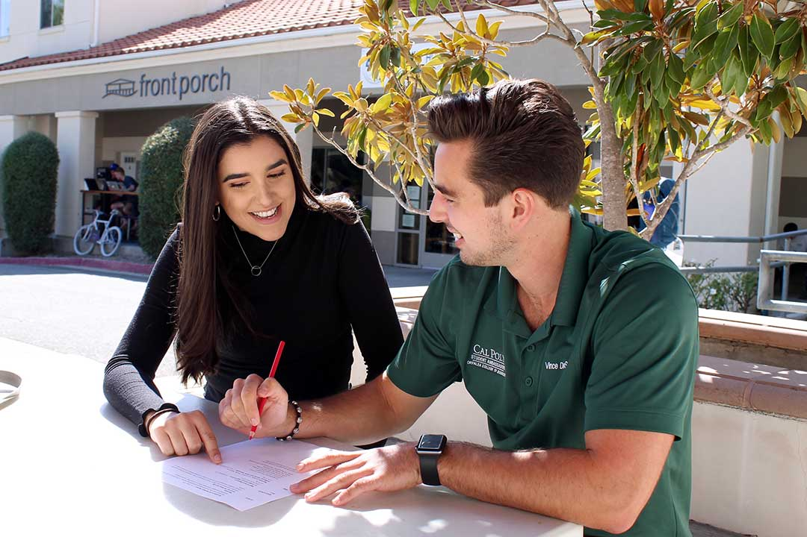
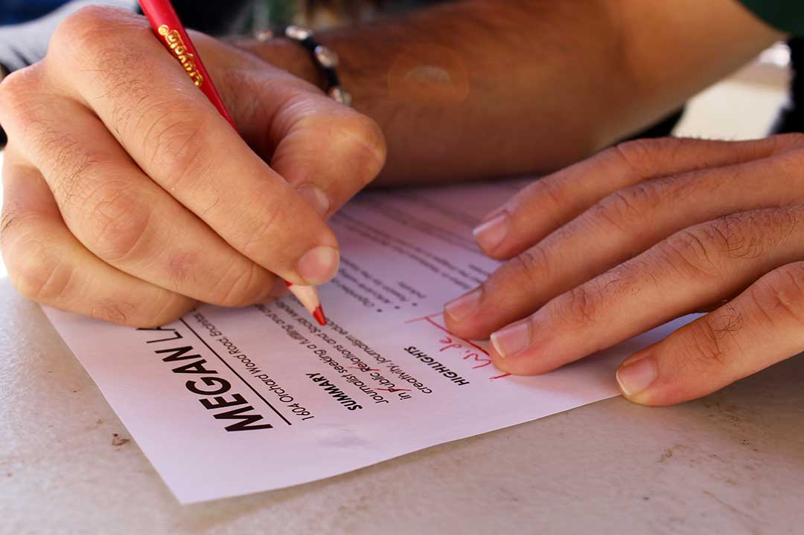
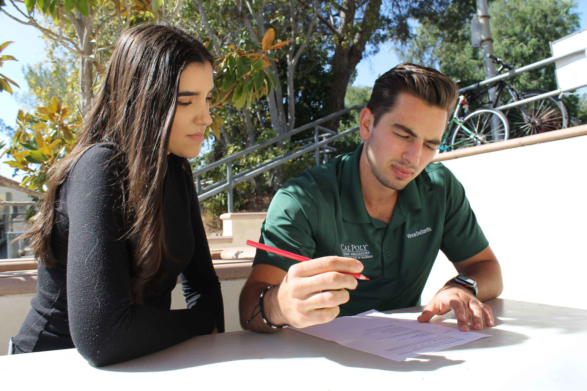
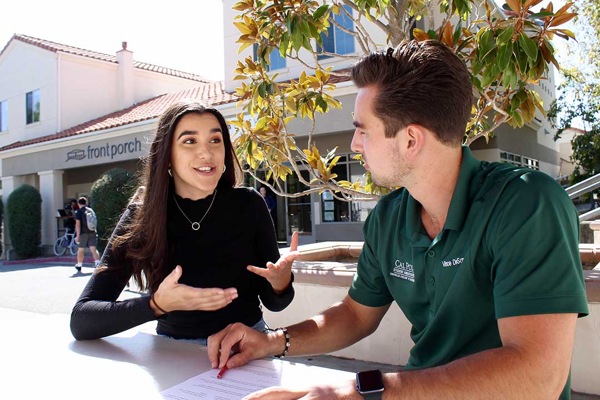
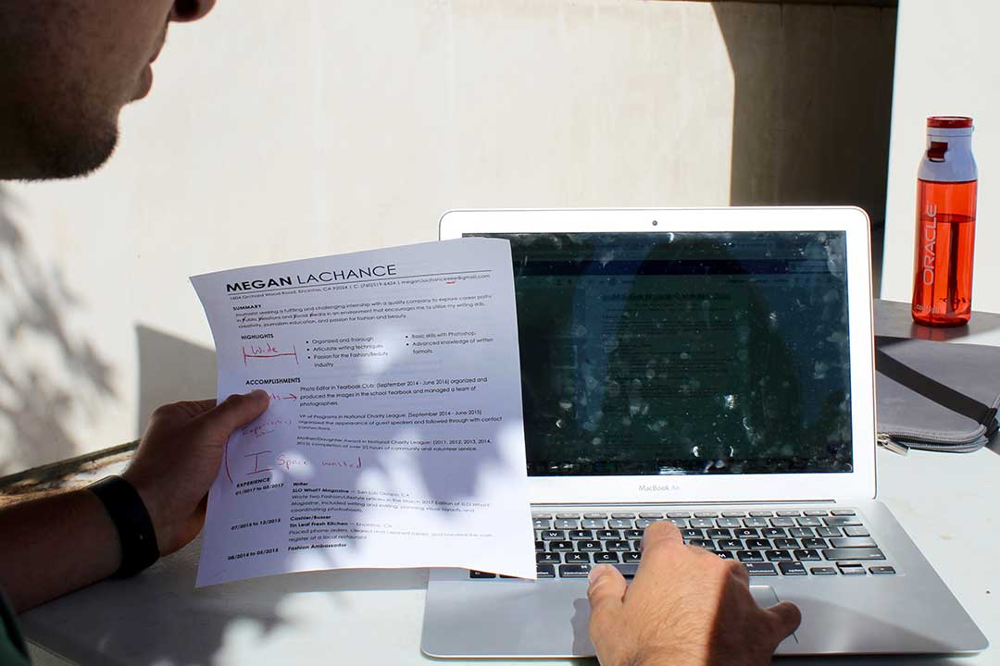
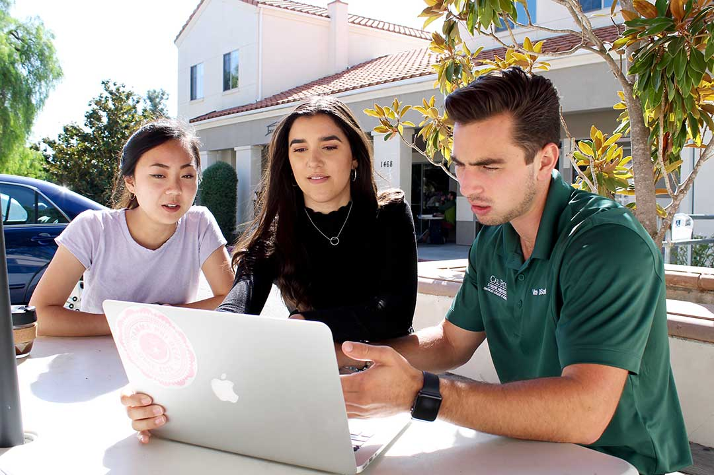
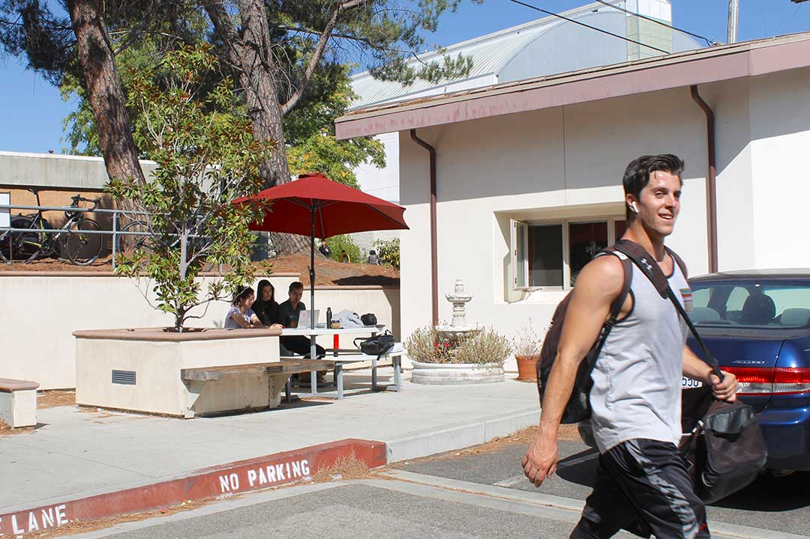
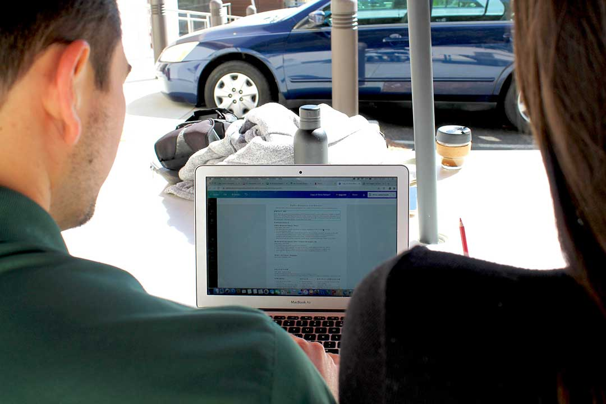
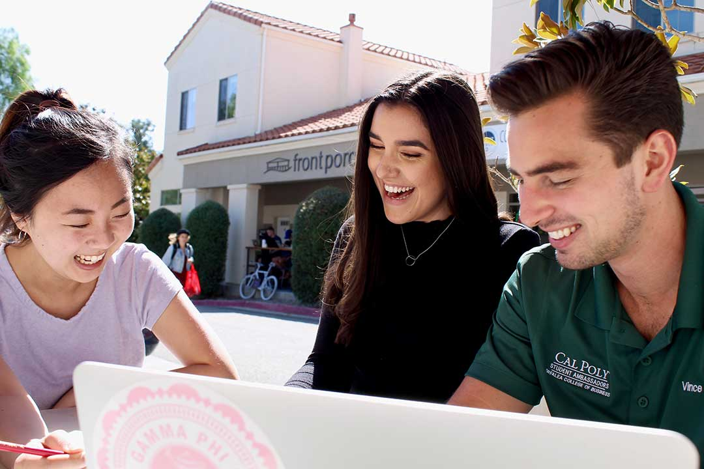
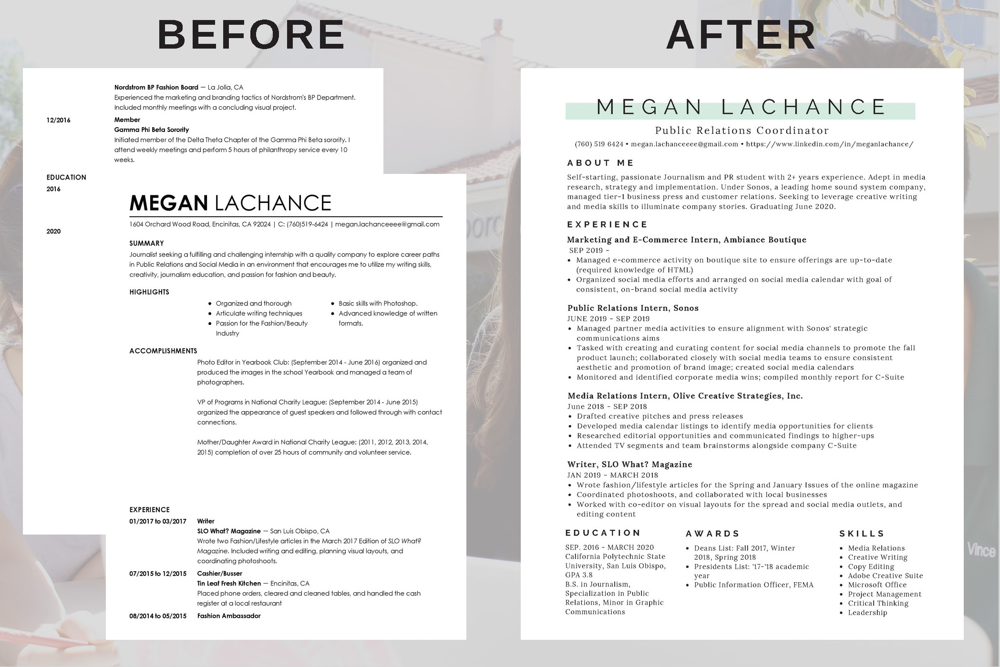

Simple Tips to Revamp Your Resume From Cal Poly Peers
A professional and refined resume is important to both college and post-grad success. Two peer mentors sat down with a fellow Cal Poly senior to offer their expertise.
1 / 11

Front Porch, San Luis Obispo, Oct. 14, 2019｜Journalism senior Megan LaChance and business administration senior Vince DeSantis sit together outside of San Luis Obispo’s Front Porch. LaChance and DeSantis are tackling the all-important task of editing LaChance’s resumè. DeSantis is an Orfalea College of Business Peer Mentor and Student Ambassador and has helped fellow students with career readiness in those roles. Before he begins editing, he asks LaChance, “What do you like best about your resumè?”
2 / 11

Front Porch, San Luis Obispo, Oct. 14, 2019｜DeSantis begins his editing process with a quick scan of the resumè. He assures LaChance that her resumè is a great start, but he quickly begins to identify areas for improvement. A copy edit reveals what DeSantis describes as “common mistakes:” wasted space, incorrect capitalization and inconsistencies in language. He drags a red pencil across the page to indicate these errors, one of which is wide margins—a problem he claims leads to underutilized space.
3 / 11

Front Porch, San Luis Obispo, Oct. 14, 2019｜LaChance looks on with focus, noting the edits being made. “I always left a lot of white space because it made the resumè look less daunting,” said LaChance. DeSantis explained that while it’s smart to not overwhelm the page with content everywhere, “you have to strike a happy medium” to still achieve a one-page, concise resumè.
4 /11

Front Porch, San Luis Obispo, Oct. 14, 2019｜The two chat about LaChance’s resumè choices, specifically why she still includes high school experience. “I’d suggest removing it now that you’re a senior and just ‘beef up’ your college involvement instead,” DeSantis said.
5 / 11

Front Porch, San Luis Obispo, Oct. 14, 2019｜After an initial round of copy edits, DeSantis dives into design recommendations for a more streamlined resumè. He uses Canva, a free graphic design website, as the site already has resumè templates available. The two scan the site to find a design that LaChance likes.
6 / 11

Front Porch, San Luis Obispo, Oct. 14, 2019｜ DeSantis and LaChance are joined by DeSantis’ coworker Eunice Lee, a senior business administration student and an Orfalea College of Business Peer Mentor. Lee is minoring in integrated marketing communications and offers design advice for LaChance’s revamped resumè.
7 /11
Front Porch, San Luis Obispo, Oct. 14, 2019｜With red pencil in hand, Lee makes suggestions for the design as DeSantis executes the new appearance. “I always suggest Canva when I help people with resumès,” Lee said. “The templates are flexible and really easy to update whenever you have new work experience. It definitely adds some personality to the resumè.”
8 / 11

Front Porch, San Luis Obispo, Oct. 14, 2019｜As the three edit away, Cal Poly students pass by, coming and going from Cal Poly’s buzzing campus.
9 / 11

Front Porch, San Luis Obispo, Oct. 14, 2019｜DeSantis navigates Canva and starts inputting LaChance’s most recent experience with edits made earlier. Careful arrangement and concise text brings LaChance’s resumè down to one page. He adds an awards and a skills section at the bottom of the resumè, “to paint a more holistic picture of [LaChance] as a job candidate.”
10 / 11

Front Porch, San Luis Obispo, Oct. 14, 2019｜While resumè editing may not be the most glamorous task, DeSantis and Lee keep LaChance laughing through the process. “I felt a bit intimidated showing them my resumè at first,” LaChance said. “But they were both so approachable and it’s a bit less daunting to show people your age your resumè. The final product is a major improvement.”
11 / 11

LaChance’s resumè is now refined, professional and application-ready. DeSantis’ and Lee’s simple edits to design and syntax replace the previous two-page document, bringing the resumè to post-grad caliber.
❮
❯